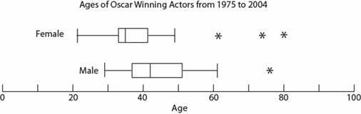

<link rel="import" href="../../bower_components/polymer/polymer.html">
<link rel="import" href="./variable-view-styles.html">
<dom-module id="variable-view">
    <template>
        <style include="variable-view-styles" is="custom-style"></style>
        <table width="90%">
            <caption style="font-size: 24pt;font-weight: bold;font-style:italic;color:darkgray">{{variableData.variableName}}</caption>
            <tr>
                <th>Lowest</th>
                <th>Lower Quartile</th>
                <th>Median</th>
                <th>Upper Quartile</th>
                <th>Highest</th>
            </tr>
            <tr>
                <td>{{variableData.lowest}}</td>
                <td>{{variableData.lowerQuartile}}</td>
                <td>{{variableData.median}}</td>
                <td>{{variableData.upperQuartile}}</td>
                <td>{{variableData.highest}}</td>
            </tr>
            <tr>
                <td colspan="5"><hr/></td>
            </tr>
            <tr>
                <td colspan="5" style="text-align: center"> </td>
            </tr>
            <tr>
                <td colspan="5"><hr/></td>
            </tr>
        </table>
    </template>
    <script>
        Polymer({
            is:'variable-view',
            properties:{
                variableData: {
                    type:Object,
                    notify:true
                }
            },
            ready: function(){

            }
        })
    </script>
</dom-module>